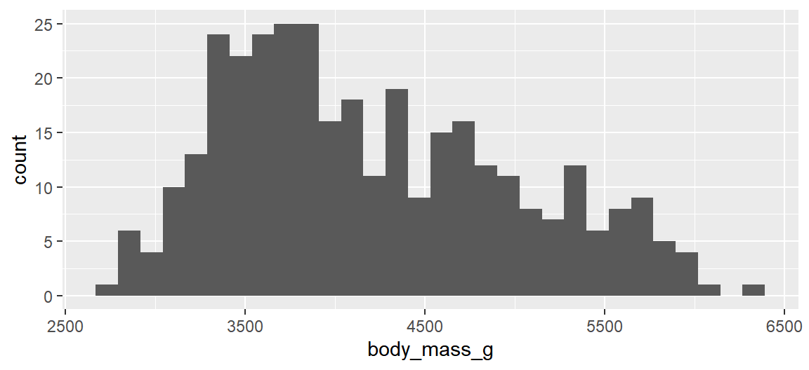
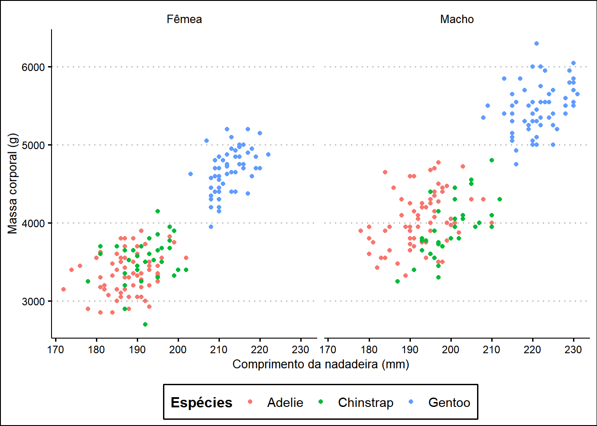
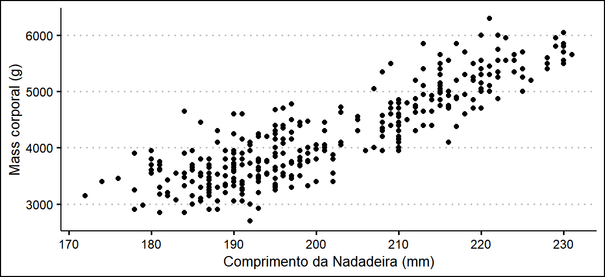
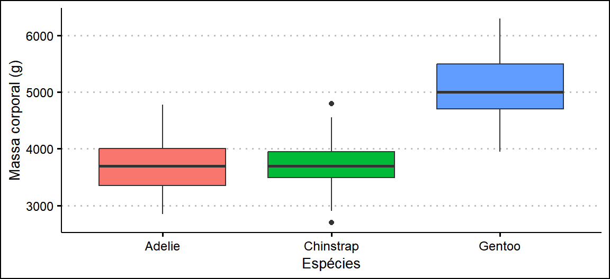

library(tidyverse)3 Tidyverse
O tidyverse (WICKHAM ET AL., 2019) é um ecossistema de pacotes R que reúne as tarefas essenciais de qualquer fluxo de trabalho em ciência de dados: importação, organização, manipulação, visualização e programação. Seu principal objetivo é criar uma sintaxe consistente e legível, facilitando a comunicação entre quem escreve o código e quem o executa. Note-se que, embora o tidyverse cubra grande parte do fluxo de trabalho, ele não inclui ferramentas específicas de modelagem estatística.
Para facilitar essa integração, o tidyverse utiliza intensamente do operador pipe1 (%>%) , que passa o resultado de uma etapa diretamente para a próxima, evitando aninhamentos confusos. Ao carregar o pacote, diversos módulos são automaticamente disponibilizados:
-- Attaching core tidyverse packages ------ tidyverse 2.0.0 --
✔ dplyr 1.1.4 ✔ readr 2.1.5
✔ forcats 1.0.0 ✔ stringr 1.5.1
✔ ggplot2 3.5.2 ✔ tibble 3.2.1
✔ lubridate 1.9.4 ✔ tidyr 1.3.1
✔ purrr 1.0.4
-- Conflicts ------------------------------ tidyverse_conflicts() --
x dplyr::filter() masks stats::filter()
x dplyr::lag() masks stats::lag()
i Use the conflicted package (http://conflicted.r-lib.org/)
to force all conflicts to become errorsEntre os principais estão:
ggplot2(visualização de dados);dplyr(manipulação de dados);tidyr(formatação “long”/“wide”);readr(leitura eficiente de arquivos de texto);tibble(versão moderna dodata.frame);purrr(programação funcional);stringr,forcatse outros.
Como dito, muitos pacotes definem funções com nomes idênticos, sendo costatumum que o console exiba nomes como:
The following objects are masked from ‘package:stats’:
filter, lagUm pilar do tidyverse é a adoção do princípio tidy (WICKHAM, 2014), em que:
- Cada variável ocupa uma coluna;
- Cada observação ocupa uma linha;
- Cada tipo de entidade observacional fica em sua própria tabela.
Nesse contexto, a entidade observacional é o conceito central que define o que uma linha representa. Pode ser um paciente em um estudo clínico, um país em dados econômicos ou, como nos exemplos a seguir:
- Aves: Cada linha corresponde a uma única ave, registrando suas características (peso, envergadura, espécie, etc.).
- Plantas: Cada linha representa um vaso de planta em um experimento (altura, número de folhas, tipo de solo, etc.).
A estrutura de dados que implementa essa filosofia no tidyverse é o tibble. Ele é a versão moderna do data.frame, projetado para ser mais prático e informativo, exibindo resumos concisos dos dados e fornecendo diagnósticos mais úteis.
Uma vez apresentada a filosofia e a estrutura de dados do tidyverse, o foco se volta para a aplicação prática. A seguir, a concentração do material residirá nos dois pacotes centrais do tidyverse: o dplyr, para manipulação de dados, e o ggplot2, para a criação de gráficos.
3.1 Manipulação de dados com o pacote dplyr
O dplyr é um pacote do tidyverse que fornece um conjunto de ferramentas robustas e intuitivas para manipulação de dados. Os comandos oferecidos soam um tanto quanto intuitivos, correspondendo ações comuns na área de análise de dados. Para explorar as principais funções será utilizado o dataset penguins, focando em processos de filtragem, organização, transformação e resumos dos dados, permitindo responder a perguntas básicas sobre a biologia e ecologia dos pinguins.
O primeiro passo a ser feito é instalar a biblioteca palmerpenguins e, em seguida, carregá-la no ambiente de trabalho, para que possamos realizar uma inspeção inicial na estrutura dos dados.
install.packages("palmerpenguins") # Realizar apenas uma única vezlibrary(palmerpenguins)Para carregarmos os dados sobre pinguins no ambiente de trabalho, podemos utilizar a função data():
data("penguins", package = "palmerpenguins")Podemos observar que no painel Environment do RStudio, aparece o objeto penguins, isso significa que o conjunto de dados está carregado no ambiente de trabalho e podemos dar início nas inspeções. O primeiro comando que será visto é o glimpse(). Ele exibe, de maneira prática e rápida, a estrutura do dataset como: dimensão (número de linhas e colunas), o nome de cada coluna, o tipo de dado de cada coluna e as primeiras observações.
glimpse(penguins)Rows: 344
Columns: 8
$ species <fct> Adelie, Adelie, Adelie, Adelie, Adelie, Adelie, Adel…
$ island <fct> Torgersen, Torgersen, Torgersen, Torgersen, Torgerse…
$ bill_length_mm <dbl> 39.1, 39.5, 40.3, NA, 36.7, 39.3, 38.9, 39.2, 34.1, …
$ bill_depth_mm <dbl> 18.7, 17.4, 18.0, NA, 19.3, 20.6, 17.8, 19.6, 18.1, …
$ flipper_length_mm <int> 181, 186, 195, NA, 193, 190, 181, 195, 193, 190, 186…
$ body_mass_g <int> 3750, 3800, 3250, NA, 3450, 3650, 3625, 4675, 3475, …
$ sex <fct> male, female, female, NA, female, male, female, male…
$ year <int> 2007, 2007, 2007, 2007, 2007, 2007, 2007, 2007, 2007…A saída deste comando revela que existem 344 observações e 8 variáveis, sendo elas species, island, bill_length_mm, flipper_length_mm, body_mass_g, sex e year, com seus respectivos tipos, como factor para species e numeric para bill_length_mm. Além disso, é possível observar dados ausentes em algumas variáveis, representados por NA. Em geral, nos datasets disponíveis em pacotes R, é possível utilizar o comando help(penguins) para buscar informações sobre o conjunto de dados que será trabalhado.
Executando o comando de ajuda, são obtidas as seguintes informações sobre as variáveis:
species: um fator que denota a espécie do pinguim (Adélie, Chinstrap ou Gentoo).island: um fator que denota ilhas no Arquipélago Palmer na Antártica (Biscoe, Dream ou Torgersen).bill_length_mm: um número que representa o comprimento do bico (em milímetros).bill_depth_mm: um número que representa a profundidade do bico (em milímetros).flipper_length_mm: um número que representa o comprimento da nadadeira (em milímetros).body_mass_g: um número inteiro que representa a massa do animal (em gramas).sex: um fator que representa o sexo do animal (feminino ou masculino).year: um número inteiro que denota o ano de estudo (2007, 2008 ou 2009).
Adicionalmente, também é informado que os dados foram originalmente publicados no estudo de Gorman et al. (2014) e que essa pesquisa fez parte do programa Palmer Station Long-Term Ecological Research (LTER). Isso significa que o conjunto de dados que está sendo utilizado possui uma origem científica real, ligada a questões sobre como o ambiente e as diferenças entre sexos afetam a vida dessas aves.
A segunda função que será vista é o select(). Frequentemente, um conjunto de dados contém mais informações do que o necessário para uma análise específica. Com isso em mente, a função select() permite-nos selecionar colunas de interesse. Em geral, os argumentos são os nomes das colunas.
penguins %>%
select(species, island, sex)# A tibble: 344 × 3
species island sex
<fct> <fct> <fct>
1 Adelie Torgersen male
2 Adelie Torgersen female
3 Adelie Torgersen female
4 Adelie Torgersen <NA>
5 Adelie Torgersen female
6 Adelie Torgersen male
7 Adelie Torgersen female
8 Adelie Torgersen male
9 Adelie Torgersen <NA>
10 Adelie Torgersen <NA>
# ℹ 334 more rowsO dplyr também oferece “seletores auxiliares” que tornam a seleção mais poderosa e flexível. Por exemplo, caso desejarmos selecionar todas as medidas biométricas contidas no dataset que terminam com _mm, é possível usar a função-argumento ends_with() dentro de select():
penguins %>%
select(
body_mass_g, ends_with("_mm")
)# A tibble: 344 × 4
body_mass_g bill_length_mm bill_depth_mm flipper_length_mm
<int> <dbl> <dbl> <int>
1 3750 39.1 18.7 181
2 3800 39.5 17.4 186
3 3250 40.3 18 195
4 NA NA NA NA
5 3450 36.7 19.3 193
6 3650 39.3 20.6 190
7 3625 38.9 17.8 181
8 4675 39.2 19.6 195
9 3475 34.1 18.1 193
10 4250 42 20.2 190
# ℹ 334 more rowsOutros seletores úteis incluem starts_with() e contains(). Para remover colunas, utiliza-se o sinal de menos (-). Por exemplo, deseja-se remover as colunas ano e island:
penguins %>%
select(-year, -island)# A tibble: 344 × 6
species bill_length_mm bill_depth_mm flipper_length_mm body_mass_g sex
<fct> <dbl> <dbl> <int> <int> <fct>
1 Adelie 39.1 18.7 181 3750 male
2 Adelie 39.5 17.4 186 3800 female
3 Adelie 40.3 18 195 3250 female
4 Adelie NA NA NA NA <NA>
5 Adelie 36.7 19.3 193 3450 female
6 Adelie 39.3 20.6 190 3650 male
7 Adelie 38.9 17.8 181 3625 female
8 Adelie 39.2 19.6 195 4675 male
9 Adelie 34.1 18.1 193 3475 <NA>
10 Adelie 42 20.2 190 4250 <NA>
# ℹ 334 more rowsAntes prosseguirmos para a próxima função, vale destacar que o conjunto de dados penguins é um objeto tibble dentro do R e, portanto, por mais que existam 344 observações, o tibble enxuga a visualização para somente 10, além de indicar quantas linhas ainda existem.
A terceira função é o filter(). Enquanto select() trabalha nas colunas, o filter() trabalha nas linhas, permitindo-nos manter apenas as observações que satisfazem certas condições. É aqui que é possível responder perguntas investigadas com relação aos dados. Por exemplo, para encontrar todos os pinguins da espécie Adelie que vivem na ilha Torgersen:
penguins %>%
filter(
species == "Adelie", island == "Torgersen"
)# A tibble: 52 × 8
species island bill_length_mm bill_depth_mm flipper_length_mm body_mass_g
<fct> <fct> <dbl> <dbl> <int> <int>
1 Adelie Torgersen 39.1 18.7 181 3750
2 Adelie Torgersen 39.5 17.4 186 3800
3 Adelie Torgersen 40.3 18 195 3250
4 Adelie Torgersen NA NA NA NA
5 Adelie Torgersen 36.7 19.3 193 3450
6 Adelie Torgersen 39.3 20.6 190 3650
7 Adelie Torgersen 38.9 17.8 181 3625
8 Adelie Torgersen 39.2 19.6 195 4675
9 Adelie Torgersen 34.1 18.1 193 3475
10 Adelie Torgersen 42 20.2 190 4250
# ℹ 42 more rows
# ℹ 2 more variables: sex <fct>, year <int>Neste exemplo, as condições separadas por vírgula são unidas por um “E” lógico. Também é possível utilizar o “OU” lógico para determinar pinguins mais pesados (acima de 6000g) ou com bicos muito longos (mais de 55mm) através do conectivo |:
penguins %>%
filter(
body_mass_g > 6000 | bill_length_mm > 55
)# A tibble: 6 × 8
species island bill_length_mm bill_depth_mm flipper_length_mm body_mass_g
<fct> <fct> <dbl> <dbl> <int> <int>
1 Gentoo Biscoe 49.2 15.2 221 6300
2 Gentoo Biscoe 59.6 17 230 6050
3 Gentoo Biscoe 55.9 17 228 5600
4 Gentoo Biscoe 55.1 16 230 5850
5 Chinstrap Dream 58 17.8 181 3700
6 Chinstrap Dream 55.8 19.8 207 4000
# ℹ 2 more variables: sex <fct>, year <int>O filter() também permite encontrar valores ausentes (NAs) em conjunto da função is.na(). Por exemplo, deseja-se verificar quais pinguins não tiveram seu sexo registrado:
penguins %>%
filter(is.na(sex))# A tibble: 11 × 8
species island bill_length_mm bill_depth_mm flipper_length_mm body_mass_g
<fct> <fct> <dbl> <dbl> <int> <int>
1 Adelie Torgersen NA NA NA NA
2 Adelie Torgersen 34.1 18.1 193 3475
3 Adelie Torgersen 42 20.2 190 4250
4 Adelie Torgersen 37.8 17.1 186 3300
5 Adelie Torgersen 37.8 17.3 180 3700
6 Adelie Dream 37.5 18.9 179 2975
7 Gentoo Biscoe 44.5 14.3 216 4100
8 Gentoo Biscoe 46.2 14.4 214 4650
9 Gentoo Biscoe 47.3 13.8 216 4725
10 Gentoo Biscoe 44.5 15.7 217 4875
11 Gentoo Biscoe NA NA NA NA
# ℹ 2 more variables: sex <fct>, year <int>A interpretação do NA é relativa ao contexto dos dados. No caso das observações sobre os pinguins, os valores ausentes na variável sex permite identificar pinguins que não tiveram o sexo avaliado, tornando um provável erro frustrante de coleta de dados para um objeto de investigação. O pacote tidyr, também do tidyverse, oferece a função drop_na(), que remove quaisquer linhas que contenham NAs, permitindo a criação de um dataset auxiliar:
penguins_completo <- penguins %>%
drop_na()A quarta função que será apresentada é arrange(), que permite reordenar as linhas do dataframe com base nos valores de uma ou mais colunas. Isso é útil para encontrar extremos ou simplesmente para organizar a saída de uma forma mais lógica. Para encontrar os pinguins mais leves, ordenamos pela massa corporal em ordem crescente (o padrão):
penguins %>%
arrange(body_mass_g)# A tibble: 344 × 8
species island bill_length_mm bill_depth_mm flipper_length_mm body_mass_g
<fct> <fct> <dbl> <dbl> <int> <int>
1 Chinstrap Dream 46.9 16.6 192 2700
2 Adelie Biscoe 36.5 16.6 181 2850
3 Adelie Biscoe 36.4 17.1 184 2850
4 Adelie Biscoe 34.5 18.1 187 2900
5 Adelie Dream 33.1 16.1 178 2900
6 Adelie Torgers… 38.6 17 188 2900
7 Chinstrap Dream 43.2 16.6 187 2900
8 Adelie Biscoe 37.9 18.6 193 2925
9 Adelie Dream 37.5 18.9 179 2975
10 Adelie Dream 37 16.9 185 3000
# ℹ 334 more rows
# ℹ 2 more variables: sex <fct>, year <int>Para ordenar os valores em ordem decrescente (do maior para o menor), utilizamos a função auxiliar desc(), desta maneira, encontramos os pinguins mais pesados:
penguins %>%
arrange(desc(body_mass_g))# A tibble: 344 × 8
species island bill_length_mm bill_depth_mm flipper_length_mm body_mass_g
<fct> <fct> <dbl> <dbl> <int> <int>
1 Gentoo Biscoe 49.2 15.2 221 6300
2 Gentoo Biscoe 59.6 17 230 6050
3 Gentoo Biscoe 51.1 16.3 220 6000
4 Gentoo Biscoe 48.8 16.2 222 6000
5 Gentoo Biscoe 45.2 16.4 223 5950
6 Gentoo Biscoe 49.8 15.9 229 5950
7 Gentoo Biscoe 48.4 14.6 213 5850
8 Gentoo Biscoe 49.3 15.7 217 5850
9 Gentoo Biscoe 55.1 16 230 5850
10 Gentoo Biscoe 49.5 16.2 229 5800
# ℹ 334 more rows
# ℹ 2 more variables: sex <fct>, year <int>Também é possível ordenar múltiplas colunas. Por exemplo, para encontrar o pinguim mais pesado dentro de cada espécie:
penguins %>%
arrange(
species, # Primeiro por espécie
desc(body_mass_g) # Depois por massa decrescente
)# A tibble: 344 × 8
species island bill_length_mm bill_depth_mm flipper_length_mm body_mass_g
<fct> <fct> <dbl> <dbl> <int> <int>
1 Adelie Biscoe 43.2 19 197 4775
2 Adelie Biscoe 41 20 203 4725
3 Adelie Torgersen 42.9 17.6 196 4700
4 Adelie Torgersen 39.2 19.6 195 4675
5 Adelie Dream 39.8 19.1 184 4650
6 Adelie Dream 39.6 18.8 190 4600
7 Adelie Biscoe 45.6 20.3 191 4600
8 Adelie Torgersen 42.5 20.7 197 4500
9 Adelie Dream 37.5 18.5 199 4475
10 Adelie Torgersen 41.8 19.4 198 4450
# ℹ 334 more rows
# ℹ 2 more variables: sex <fct>, year <int>A quinta função e, com certeza, uma das mais funcionais é a mutate(). Ela permite criar novas colunas (variáveis) que são funções de colunas já existentes, sem modificar as originais. Por exemplo, suponha que desejamos mostrar somente as espécies e massas de pinguins em quilogramas (kg):
penguins %>%
mutate(body_mass_kg = body_mass_g/1000) %>%
select(species, body_mass_kg)# A tibble: 344 × 2
species body_mass_kg
<fct> <dbl>
1 Adelie 3.75
2 Adelie 3.8
3 Adelie 3.25
4 Adelie NA
5 Adelie 3.45
6 Adelie 3.65
7 Adelie 3.62
8 Adelie 4.68
9 Adelie 3.48
10 Adelie 4.25
# ℹ 334 more rowsPodemos usar mutate() para criar categorias. A função case_when() é extremamente útil para criar classificações baseadas em condições lógicas., Suponha que desejamos criar uma categoria de tamanho baseada na massa corporal:
penguins %>%
mutate(
size_category = case_when(
body_mass_g > 4750 ~ "Grande",
body_mass_g < 3500 ~ "Pequeno",
TRUE ~ "Médio"
)
) %>%
select(
species, body_mass_g, size_category
)# A tibble: 344 × 3
species body_mass_g size_category
<fct> <int> <chr>
1 Adelie 3750 Médio
2 Adelie 3800 Médio
3 Adelie 3250 Pequeno
4 Adelie NA Médio
5 Adelie 3450 Pequeno
6 Adelie 3650 Médio
7 Adelie 3625 Médio
8 Adelie 4675 Médio
9 Adelie 3475 Pequeno
10 Adelie 4250 Médio
# ℹ 334 more rowsAs funções group_by() e summarise() formam uma dupla formidável para agrupar e resumir os dados, pertencendo ao coração da análise de dados. A função summarise() serve para calcular estatísticas resumidas (como média, total, mínimo etc.) e, quando usada em conjunto com group_by() permite gerar resumos por grupo.
Inicialmente, vamos utilizar o summarise() no dataset completo para obter estatísticas globais. Não obstante, é bom frisar a utilização do argumento na.rm = TRUE para instruir a remoção dos valores NA.
penguins %>%
summarise(
massa_media = mean(body_mass_g, na.rm = TRUE),
nadadeira_max = max(flipper_length_mm, na.rm = TRUE)
)# A tibble: 1 × 2
massa_media nadadeira_max
<dbl> <int>
1 4202. 231No entanto, essas métricas não fornecem informações com relação as espécies de pinguins. Para resolver isso e possibilitar que mais perguntas sejam respondidas, a função group_by() permite que o R faça operações em subconjuntos. Por exemplo, suponha que desejamos determinar qual é a massa corporal por espécie:
penguins %>%
group_by(species) %>%
summarise(
massa_media_g = mean(body_mass_g, na.rm = TRUE)
)# A tibble: 3 × 2
species massa_media_g
<fct> <dbl>
1 Adelie 3701.
2 Chinstrap 3733.
3 Gentoo 5076.Podemos fazer agrupamentos por múltiplas variáveis para investigações mais profundas. Por exemplo, considere que um pesquisador deseja explorar o dimorfismo sexual. Para isso, estatísticas por espécie e sexo serão calculadas.
tabela_resumo <- penguins %>%
drop_na(sex) %>%
group_by(species, sex) %>%
summarise(
contagem = n(),
massa_media_g = mean(body_mass_g),
massa_dp_g = sd(body_mass_g),
comp_bico_medio_mm = mean(bill_length_mm),
.groups = "drop"
)
tabela_resumoVale reforçar que a Tabela 3.1 foi gerada usando o dplyr, com as funções auxiliares n() para realizar a contagem de observações em cada grupo e drop_na(sex) para remover as observações onde o sexo é desconhecido, permitindo avaliar dimorfismo sexual em todas as três espécies, especialmente na massa corporal. O grande potencial dessa tabela é obter respostas como:
- Os pinguins Gentoo são, em média, os mais pesados.
- Dentro de cada espécie, os machos são consistentemente mais pesados e têm bicos mais longo que as fêmeas.
Esses resultados permitem tirar conclusões sobre algumas hipóteses biológicas.
Por fim, a última função que será abordada é a recode(). Muitas vezes, os nomes das categorias nos conjuntos de dados não são ideais para a análise ou apresentação em gráficos. Podem ser longos demais, estarem em outro idioma ou simplesmente não serem claros. Para isso, a função recode() permite renomear valores de uma variável categórica de forma simples e direta. Por exemplo, suponha que desejamos traduzir os termos da variável sex da Tabela 3.1 para o português:
tabela_resumo %>%
mutate(
sex = recode(sex,
"female" = "Fêmea",
"male" = "Macho")
) sexo da Tabela 3.1.
As principais funções do pacote dplyr que foram vistas estão resumidas e descritas na Tabela Tabela 3.3 e agora que aprendemos como manipular os dados com o dplyr, podemos avançar para a construção de gráficos com o pacote ggplot2.
tidyverse.
| Função | Descrição |
|---|---|
| glimpse() | Inspecionar conjuntos de dados. |
| select() | Seleciona colunas pelo nome. |
| filter() | Filtra linhas com base em seus valores. |
| arrange() | Reordena as linhas. |
| mutate() | Cria novas colunas (variáveis). |
| group_by() | Agrupa os dados por uma ou mais variáveis. |
| summarise() | Reduz múltiplos valores a um único resumo. |
| recode() | Renomeia categorias de variáveis. |
| n() | Conta o número de observações. |
3.2 Visualização de Dados com ggplot2
Se o dplyr é a gramática da manipulação de dados, possuindo funções essenciais para esse trabalho, o ggplot2 (WICKHAM, 2016) é gramática dos gráficos, permitindo construir gráficos por meio de camadas e oferecendo um sistema robusto e flexível para visualização os dados. Nesta seção, continuaremos utilizando os dados dos pinguins para explorar alguns insights visuais, desde gráficos mais simples até os mais elaborados.
Todo gráfico no ggplot2 é constituído por três camadas essenciais:
- Dados (
data): O dataframe que contém as informações a serem plotadas. - Mapeamento Estéticos (
aes): A funçãoaes()(de aesthetics) descreve como as variáveis do nosso dataframe são mapeadas para as propriedades visuais do gráfico. As estéticas mais comuns sãoxey(os eixos), mas também incluemcolor(cor),shape(forma),size(tamanho) ealpha(transparência/opacidade). - Objetos geométricos (
geom): Osgeomsdefinem como os dados são representados visualmente. Por exemplo,geom_point()cria um gráfico de dispersão,geom_bar()cria um gráfico de barras,geom_line()cria um gráfico de linhas, e assim por diante.

3.2.1 Estatística descritiva
Antes de explorar as relações gráficas, é útil enfatizar e entender alguns conceitos essenciais da Estatística Descritiva como os tipos de variáveis, normas para tabelas e as definições de frequências.
Em geral, pode-se dizer que existem duas categorias de variáveis dentro da estatística:
- Variáveis Qualitativas: Também chamadas por variáveis categóricas e como o próprio nome diz, expressam qualidade e indicam categoria ou classificação a qual o objeto pertence. Se existir uma ordem entre as possíveis categorias, a variável é dita qualitativa ordinal. Caso contrário, é dita ser qualitativa nominal.
- Variáveis Quantitativas: São variáveis que tomam valores numéricos e expressam quantidade. Podem ser especificadas por Variáveis Discretas, quando assumem valores dentro de um conjunto enumerável (quando é possível contá-las) ou por Variáveis Continuas, quando podem assumir infinitos valores de um intervalo não numerável2 (não é possível contar o número de valores dentro de um intervalo).
Assim, para explorar e apresentar as informações contidas num conjunto de dados, precisamos resumir essas informações de forma que seja possível enxergá-las rapidamente e adquirir conhecimento sobre o assunto.
O resumo pode ser feito por meio de tabelas, gráficos e cálculo de algumas quantidades representativas. O primeiro passo é identificar o tipo de cada variável para aplicarmos a técnica apropriada.
No entanto, antes de explorarmos a organização dos dados em tabelas e gráficos, são necessários conceitos sobre algumas métricas essenciais denominadas por medidas resumo. Elas oferecem uma forma numérica e concisa de descrever as principais características das variáveis que serão trabalhadas. Em geral, são divididas em duas categorias essenciais: as medidas de tendência central, que informam onde o “centro” dos dados se localiza (como a média, mediana e moda), e as medidas de dispersão, que quantificam o quão espalhados os dados estão (como a amplitude, o desvio padrão e a variância).
A média aritmética é definida como sendo a soma de todos os valores dividida pelo número de observações ou indivíduos, ou seja, denotando-se as \(n\) observações de uma variável \(X\) por \(x_1, x_2, \dots, x_n\) e a média por \(\bar{x}\) temos: \[\bar{x} = \frac{1}{n}\sum_{i = 1}^{n} x_i\] As principais propriedades da média são:
- É uma medidas simples e popular;
- É sensível aos valores e discrepantes ou extremos. Portanto, na presença destes, a média pode não ser uma representação de valores típicos;
- É o ponto de equilíbrio da distribuição;
- Para \(k\) constante e \(X\) variável, têm-se que a média de \((X + k)\) é \((\bar{x} + k)\) e, também, a média de \((kX)\) é \((k\bar{x})\).
- Para \(X\) e \(Y\) variáveis independentes, a média de \((X\pm Y)\) é \((\bar{x} \pm \bar{y})\).
A mediana é o valor do meio de uma distribuição, ou seja, num histograma, é o valor que deixa exatamente 50% dos dados de cada lado. Para determinar o valor exato da mediana é necessário ordenar todos os valores, do menor para o maior. Se \(n\), o número de observações, é ímpar então a mediana é o valor que fica exatamente no centro; se \(n\) é par, então é a média dos dois valores centrais.
As principais propriedades da mediana são:
- Não é sensível a valores discrepantes e, portanto, é a mais apropriada para representar valores típicos quando a distribuição é assimétrica;
- Não apresenta as propriedades matemáticas convenientes que a média possui.
Quando a distribuição é simétrica, média e mediana são iguais. No entanto, caso contrário, a média estará mais afastada do meio que a mediana no sentido de uma cauda mais longa.
A moda é simplesmente o valor mais frequente da variável de estudo e para distribuições simétricas, média, mediana e moda possuem valores iguais.
Uma vez reconhecido o centro da distribuição, é necessário ter uma ideia do quanto os valores estão distantes deste centro. Quanto mais heterogêneo forem os dados, maior a dispersão e vice-versa. Dentre as métricas que dão essa ideia, destacam-se:
A amplitude definida pela diferença entre o maior e o menor valor. Além disso, é sensível a valores extremos. O primeiro quartil (\(q_1\)) e terceiro quartil (\(q_3\)), que dividem, respectivamente, o conjunto de dados em 25% e 75%. É válido ressaltar que todo conjunto de dados apresentam 3 quartis, dividindo o conjunto ordenado em quatro partes iguais, além disso, o segundo quartil (\(q_2\)) é igual a mediana. Essas medidas são úteis na construção do gráfico de caixa (boxplot) que será visto em sequência.
O desvio padrão (\(s\)) é a medida de dispersão mais popular e mede a dispersão de todos os valores em relação à média. Para calculá-lo, primeiramente calcula-se a variância, denotada por \(s^2\), que é definida por: \[s^2 = \mathbb{V}(X) = \frac{1}{n-1}\sum_{i = 1}^{n}(x_i - \bar{x})^2 = \frac{1}{n-1}\left(\sum_{i = 1}^{n}x_i^2 - \frac{\left(\sum_{i = 1}^{n} x_i\right)^2}{n}\right)\] a diferença \((x_i - \bar{x})\) é chamada de desvio, representando o quanto o indivíduo \(i\) desviou da média geral. A variância representa a média dos quadrados dos desvios em relação à média. Além disso, observe que a unidade de medida da variância é a unidade da variável \(x\) ao quadrado, dificultando sua interpretação e, para lidar com isso, utiliza-se o desvio-padrão, visto que é seu valor está na mesma escala de medida das observações, em que valores altos indica que os dados estão bastante dispersos e valores baixos, os indivíduos estão próximos da média, mostrando uma homogeneidade nos dados. As principais propriedades da variância (ou do desvio padrão) são:
- Para \(k\) constante, \(\mathbb{V}(k) = 0\), \(\mathbb{V}(k + X) = \mathbb{V}(X)\), \(\mathbb{V}(kX) = k^2\mathbb{V}(X)\);
- Para \(X\) e \(Y\) variáveis independentes, \(\mathbb{V}(X \pm Y) = \mathbb{V}(X) + \mathbb{V}(Y)\);
- É sensível aos valores discrepantes e, portanto, só deve ser usada quando a distribuição é simétrica ou aproximadamente simétrica.
Por fim, existe o coeficiente de varição (\(\text{cv}\)), que é uma medida de dispersão em termos de porcentagem da média: \[\text{cv} = \frac{s}{\bar{x}}\times 100,\] em que não há unidade de medida e, portanto, serve como métrica de comparação na variação de variáveis diferentes.
Dentro do R, a função summary() é a chave mestre que calcula quase todas as métricas que foram vistas. Para exemplificar, selecionaremos apenas a variável bill_length do conjunto de dados penguins (Tabela 3.4).
penguins %>%
select(bill_length_mm) %>%
summary()summary()
| Variável | Min | 1º Quad. | Mediana | Média | 3º Quad. | Max | NAs |
|---|---|---|---|---|---|---|---|
| bill_length_mm | 32.1 | 39.225 | 44.45 | 43.92193 | 48.5 | 59.6 | 2 |
Enquanto as medidas resumo nos fornecem valores pontuais para compreensão do centro e a dispersão, as tabelas oferecem uma visão panorâmica da distribuição dos dados. Organizar as informações de forma tabular é o primeiro para visualizar as frequências de cada categoria ou intervalo, complementando a análise numérica anterior.
As normas gerais para construção de uma tabela envolvem:
- Devem ser auto-explicativas.
- Devem conter um título, que precisa ser simples e claro, indicando informações sobre os dados (do que, onde e quando foram coletados – se forem relevantes).
Além das normas gerais, existem duas convenções importantes a serem seguidas com relação ao título de tabelas e gráficos:
- Em tabelas os títulos vem primeiro, em cima da tabela.
- Em gráficos os títulos vem por último, embaixo do gráfico.
Se necessário, notas e fontes vêm embaixo, em ambos os casos. Uma tabela começa e termina com um traço horizontal e traços na vertical devem ser evitados, conforme visto na Tabela 3.1 por exemplo.
Uma forma adequada para resumir informações sobre uma variável numa tabela é através da construção de uma tabela de frequências, que informa quais valores ou categorias a variável pode tomar, com suas respectivas frequências. Quando a variável é qualitativa, as frequências vão revelar se temos categorias mais comuns (típicas) e categorias raras ou se a distribuição é uniforme/homogênea. Já quando a variável é quantitativa, as frequências revelarão os valores típicos e/ou a distribuição dos valores é simétricas ou assimétrica.
Existem alguns tipos de frequência que podem ser utilizados para resumir as informações, dentre eles:
- Frequência absoluta ou simplesmente frequência (\(f\)): é a contagem do número de vezes que um valor ou categoria aparece.
- Frequência relativa (\(\text{fr} = f/n\)): quando esse valor é multiplicado por \(100\), informa a porcentagem do aparecimento de uma determinada categoria sobre o número total de contagem.
- Frequência acumulada (\(\text{fa}\)): é a frequência acumulada até um valor específico.
- Frequência acumulada relativa (\(\text{far} = \text{fa}/n\)): quando esse valor é multiplicado por \(100\), informa a porcentagem acumulada do aparecimento de uma determinada categoria sobre o número total de contagem.
A Tabela 3.5 contém as informações sobre as frequências de cada espécie de pinguim existente no conjunto de dados penguins. As informações básicas que podem ser extraídas é que entre as espécies dentro do estudo sobre pinguins 44.2% são Adelie, 36% são Gentoo e 19.8% são Chinstrap.
| Espécies | Frequência | Frequência absoluta | Porcentagem |
|---|---|---|---|
| Adelie | 152 | 0.442 | 44.2\% |
| Gentoo | 124 | 0.360 | 36\% |
| Chinstrap | 68 | 0.198 | 19.8\% |
| Total | 344 | 1.000 | 100\% |
Quando a variável é quantitativa e assume muitos valores distintos, para resumir e capturar o padrão da distribuição, esses valores devem ser agrupados em intervalos. A quantidade de intervalos é arbitrário, no entanto, não pode ser nem muito baixo e nem muito alto. O próximo passo é especificar os intervalos, contando quantos valores aparecem dentro de cada um deles.
Para exemplificar, utilizaremos a variável body_mass_g de nosso conjunto de dados sobre os pinguins. Em geral, segue-se os passos:
- Calcular a amplitude (\(A\)) dos dados.
penguins %>%
summarise(
maior = max(body_mass_g, na.rm = TRUE),
menor = min(body_mass_g, na.rm = TRUE),
amplitude = max(body_mass_g, na.rm = TRUE) - min(body_mass_g, na.rm = TRUE))# A tibble: 1 × 3
maior menor amplitude
<int> <int> <int>
1 6300 2700 3600# Ou ainda
A <- penguins %>%
summarise(
amplitude = diff(range(body_mass_g, na.rm = TRUE))
)- Encontrar o comprimento aproximado de cada intervalo, dividindo \(A\) pelo número de intervalos desejados.
A/6 amplitude
1 600A partir da Tabela 3.6 e pela coluna das frequências relativas, observa-se que a distribuição do peso é assimétrica. Em breve, isso será observado graficamente.
| Massa corporal (g) | Frequência | f.r. (\%) | f.a.r. (\%) |
|---|---|---|---|
| 2700 $\vdash$ 3300 | 34 | 9.94\% | 9.94\% |
| 3300 $\vdash$ 3900 | 110 | 32.16\% | 42.11\% |
| 3900 $\vdash$ 4500 | 80 | 23.39\% | 65.5\% |
| 4500 $\vdash$ 5100 | 60 | 17.54\% | 83.04\% |
| 5100 $\vdash$ 5700 | 41 | 11.99\% | 95.03\% |
| 5700 $\vdash$ 6300 | 17 | 4.97\% | 100\% |
3.2.2 Tipos de gráficos
As distribuições de frequências podem ser representadas em gráficos, que facilitam a interpretação visual do comportamento dos dados. Os gráficos mais comuns, segundo o tipo de variável, são:
- Barras ou colunas: apropriado para variáveis qualitativas e quantitativas discretas.
- Setores: qualitativas nominais com poucas categorias.
- Histograma: qualitativas contínuas.
- Box-plot: quantitativas.
- Diagrama de dispersão: relaciona duas quantitativas.
- Gráfico de linhas: evolução de quantitativa ao longo do tempo ou espaço.
Com esse conhecimento em mente podemos prosseguir para as construções dos gráficos utilizando o ggplot2
O ggplot2 funciona com construção de “camadas” (layers). O comando ggplot() inicia um gráfico vazio.
ggplot()A partir deste gráfico vazio, podemos adicionar camadas de pontos, linhas, barras, caixas, entre outros. Dê uma olhada no manual de referência. Outros como tidyverse, ou Curso de R podem ajudar bastante! Explore o máximo.
3.2.2.1 Adicionando layers
De maneira geral, a sintaxe que vamos usar é geom_yyy(data = dados, aes(x = x, y = y)), sendo que iremos substituir yyy por “line” para linhas, “point” para pontos e assim por diante.
Por exemplo, para criar um plot da massa corporal x e comprimento da nadadeira
ggplot() +
geom_point(data = penguins_completo, aes(x = body_mass_g, y = flipper_length_mm))Se quisermos que os pontos tenham uma cor em particular, usamos
ggplot() +
geom_point(data = penguins_completo, aes(x = body_mass_g, y = flipper_length_mm), color = "blue")Ou ainda, podemos utilizar a lógica do tidyverse e aplicar um pipe para criar nosso gráfico.
penguins_completo %>%
ggplot() +
geom_point(aes(x = body_mass_g, y = flipper_length_mm), color = "blue")
Veremos mais sobre esse tipo de gráfico depois.
3.2.2.2 Visualizando uma única variável
Para visualizar a distribuição de uma variável contínua como a massa corporal, utiliza-se o histograma com a função geom_histogram(). Como já foi visto, a escolha do número de colunas é arbitrário e pode afetar significativamente a aparência e a interpretação do gráfico.
penguins %>%
ggplot(mapping = aes(x = body_mass_g))+
geom_histogram()Mas esse gráfico é muito feio, vamos ver como melhorar.
penguins %>%
ggplot(mapping = aes(x = body_mass_g))+
geom_histogram(color = "white", fill = "steelblue",
breaks = seq(2700, 6300, by = 600),
closed = "left")+
scale_x_continuous(
breaks = seq(2700, 6300, by = 600),
labels = seq(2700, 6300, by = 600),
limits = c(2700, 6300)
)+
labs(
x = "Massa corporal (g)",
y = "Contagem"
)+
ggthemes::theme_clean()
Observe que a biblioteca ggthemes foi utilizada para melhorar o aspecto estético do gráfico, fornecendo temas adicionais. Portanto, é recomendável instalá-la e carregá-la no espaço de trabalho.
# install.packages("ggthemes")
library(ggthemes)Warning: pacote 'ggthemes' foi compilado no R versão 4.4.3Para variáveis categóricas, como species, usamos o geom_bar() para criar um gráfico de barras que mostra a contagem de observações em cada categoria.
penguins %>%
ggplot(mapping = aes(x = species, fill = species))+
geom_bar()+
labs(
x = "Espécie",
y = "Número de Indivíduos"
)+
labs(
x = "Massa corporal (g)",
y = "Contagem",
fill = "Espécies"
)+
theme_clean()+
theme(legend.position = "bottom")
3.2.2.3 Relações entre variáveis
O gráfico de dispersão é a ferramenta clássica para explorar relações entre duas variáveis numéricas. Investigaremos a relação existente entre o comprimento da nadadeira e a massa corporal. A hipótese é que pinguins com nadadeiras maiores também serão mais pesados, uma relação positiva e intuitiva que serve como um excelente parâmetro de partida.
penguins %>%
ggplot(aes(x = flipper_length_mm, y = body_mass_g))+
geom_point()+
labs(
x = "Comprimento da Nadadeira (mm)",
y = "Mass corporal (g)"
)+
theme_clean()

A Figura 3.1 informa uma clara tendência positiva entre a nadadeira e o peso corporal dos pinguins. Mas será que esse tendência é a mesma para todas as espécies? Para responder essa pergunta, através da função aes(), é possível adicionar estéticas adicionais como shape, color ou size para distinguir as espécies no gráfico. O argumento a ser utilizado dependerá onde a imagem será utilizada. Por exemplo, em uma revista científica, que solicita gráficos em preto e branco, é aconselhável utilizar shape ou size.
penguins %>%
ggplot(aes(x = flipper_length_mm, y = body_mass_g, color = species))+
geom_point()+
labs(
x = "Comprimento da Nadadeira (mm)",
y = "Massa corporal (g)",
color = "Espécies"
)+
theme_clean()+
theme(legend.position = "bottom")
A Figura 3.2 revela detalhes mais pertinentes, mostrando que a relação entre massa corporal e comprimento da nadadeira mantêm-se positiva (nível de grupo).
Para comparar a distribuição de uma variável numérica entre diferentes categorias, o boxplot3 (geom_boxplot()) é uma excelente ferramenta. Para isso, vamos comparar a distribuição da massa corporal entre as três espécies.
penguins %>%
ggplot(aes(x = species, y = body_mass_g, fill = species))+
geom_boxplot()+
labs(
x = "Espécies",
y = "Massa corporal (g)",
fill = "Espécies"
)+
theme_clean()+
theme(legend.position = "none")Uma alternativa ao geom_boxplot() é o geom_violin(), que traz um detalhamento sobre os dados de uma maneira mais simples. Adicionalmente, podemos utilizar o geom_jitter() para evitar a sobreposição dos dados, enriquecendo o visual do gráfico.
penguins %>%
ggplot(aes(x = species, y = body_mass_g, fill = species))+
geom_violin(alpha = 0.5)+
geom_jitter(width = 0.1, alpha = 0.5)+
labs(
x = "Espécie",
y = "Massa corporal (g)"
)+
theme_clean()+
theme(legend.position = "none")
3.2.3 Técnicas avançadas de visualização e comunicação
Com a base da construção de gráficos vista anteriormente, é possível explorar técnicas para criar gráficos mais ricos e informativos, complementando informações descobertas de forma eficaz.
3.2.4 Sub-gráficos com facet_wrap()
As facetas permitem criar uma matriz de gráficos, dividindo os dados com uma base em uma ou mais variáveis categóricas. Isso é extremamente útil para comparações. Para exemplificar, vamos utilizar o gráfico de dispersão e segmentá-lo para a variável sex.
penguins %>%
filter(!is.na(sex)) %>%
mutate(
sex = recode(sex,
"female" = "Fêmea",
"male" = "Macho")
) %>%
ggplot(aes(x = flipper_length_mm, y = body_mass_g, color = species))+
geom_point()+
facet_wrap(~ sex)+
labs(
x = "Comprimento da nadadeira (mm)",
y = "Massa corporal (g)",
color = "Espécies"
)+
theme_clean()+
theme(legend.position = "bottom")Neste gráfico, fica evidente que os pinguins fêmeas possuem menos massa corporal que os machos e, quanto as espécies, Gentoo é que concentra a maior massa. Contudo, pode ser do interesse do pesquisador além de verificar a massa corporal por sexo, também incluir a variável island.
penguins %>%
filter(!is.na(sex)) %>%
mutate(
sex = recode(sex,
"female" = "Fêmea",
"male" = "Macho")
) %>%
ggplot(aes(x = flipper_length_mm, y = body_mass_g, color = species))+
geom_point()+
facet_wrap(island ~ sex)+
labs(
x = "Comprimento da nadadeira (mm)",
y = "Massa corporal (g)",
color = "Espécies"
)+
theme_clean()+
theme(legend.position = "bottom")A partir da Figura 3.3 é possível reparar que nem todas as espécies estão presentes nas três ilhas simultaneamente. Além disso, a ilha de Biscoe é a que apresenta o maior percentual de massa corporal dos pinguins, isto é, a espécie Gentoo é a predominante.
A partir da versão 4.1 do R, existe também o operador pipe nativo
|>. No entanto, nesta apostila manteremos o uso de%>%, amplamente adotado no contexto do tidyverse.↩︎Tente contar os números do conjunto \(A = \{1,2,3,4\}\) e, também, de \(B = [1,4]\). Observe que no conjunto \(A\) há 4 elementos, enquanto em \(B\) há infinitos valores de 1 a 4.↩︎
Também chamado por gráfico de caixas.↩︎